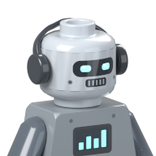
The shortlist
Your five picks from page D (Studbot, Nova the Astronaut, Mortimer the Wizard, Bjorn the Viking, Glim the Ghost) and the new figure you asked for, Dex the Raver, in four variants. All in direction D: the glossy figure rising from a rounded tile in its own colours, the shape of a desktop or Chrome app icon.
Pick the one that becomes the app logo. The icon files are made from your pick in the next step.
What changed
Studbot: the headphones are rebuilt. The band now runs over the top of the head, just behind the stud, and the two cups sit centred on the sides of the head at ear height, flush against it.
Dex the Raver is new: a normal guy with spiky messy short hair and headphones over his ears, in four takes on the hair colour, the headphones and the rave print. He is an original character; the prints carry no band or brand logo.
Side by side
All nine at 192 px (desktop and Chrome app icon) and 48 px (favicon), on light and on dark.


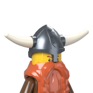

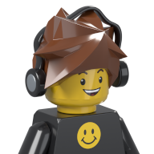
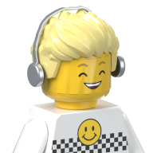
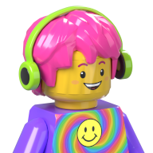
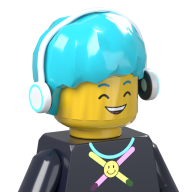
Studbot
Bjorn
Dex: Acid
Dex: Checker
Dex: Tie-dye
Dex: Glow
Your five picks
Studbot is a new render with the fixed headphones; the other four are as they were on page D.
01Studbot mascot headphones fixed
Brick Tracker mascot: a part-counting robot with a bar-chart chest screen
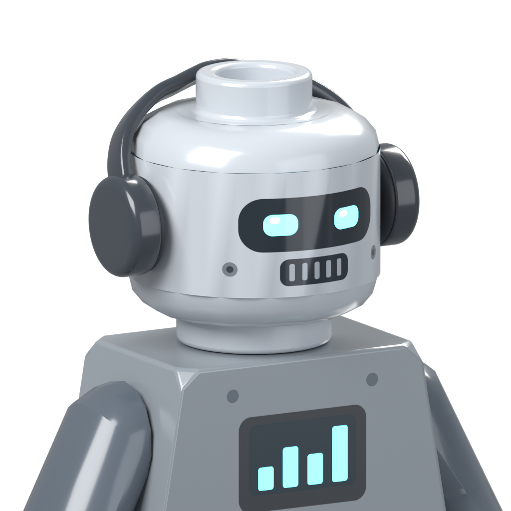
192
48
192
48
192 px is the desktop and Chrome app icon (shown at 96 css px, sharp on a 2x screen); 48 px is the favicon at its true size.
02Nova the Astronaut
Classic helmet, white suit with orange shoulder flashes and a mission patch
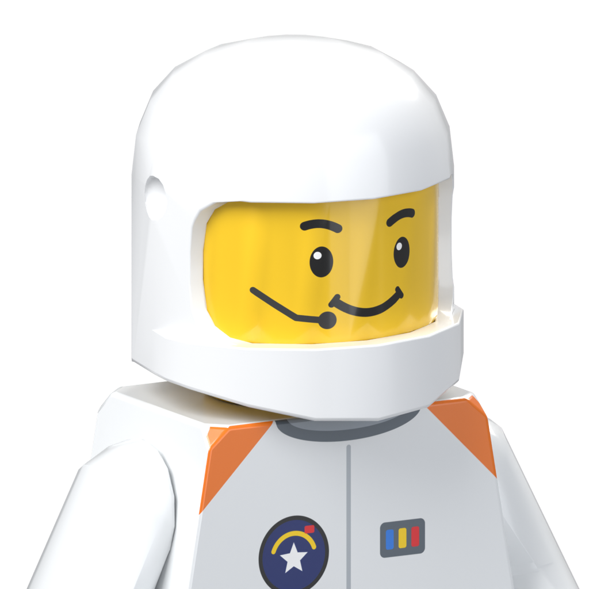

192 px is the desktop and Chrome app icon (shown at 96 css px, sharp on a 2x screen); 48 px is the favicon at its true size.
03Mortimer the Wizard
Tall wizard hat, white beard and a starry robe
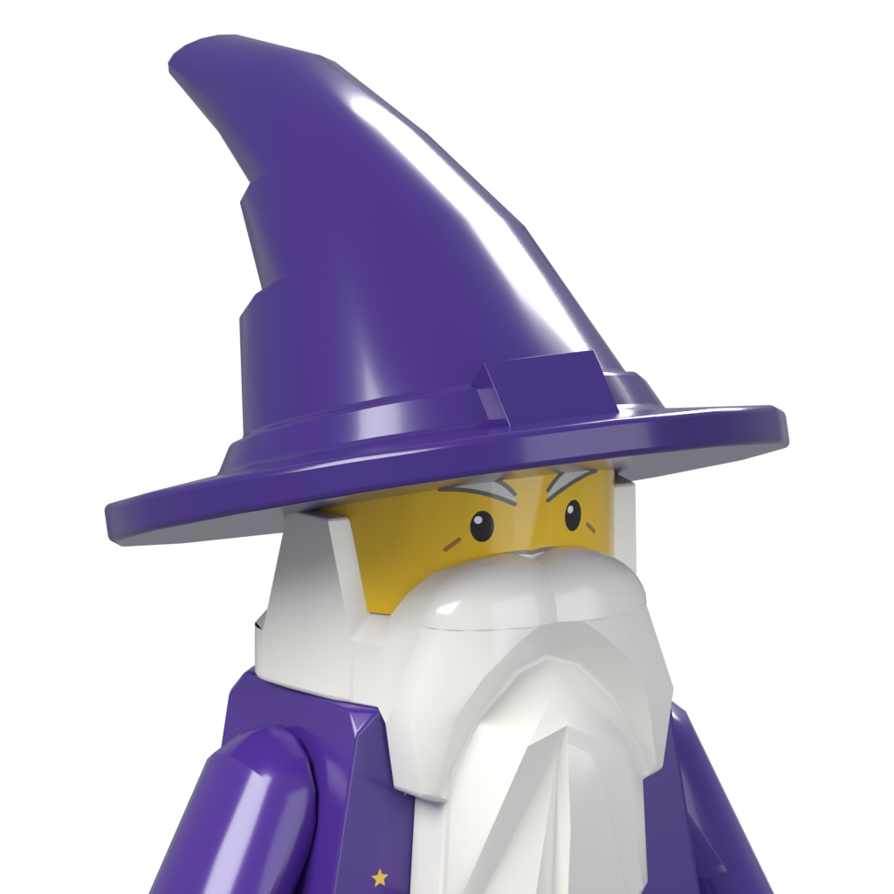
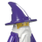
48
192 px is the desktop and Chrome app icon (shown at 96 css px, sharp on a 2x screen); 48 px is the favicon at its true size.
04Bjorn the Viking
Horned helmet, braided ginger beard and a fur collar
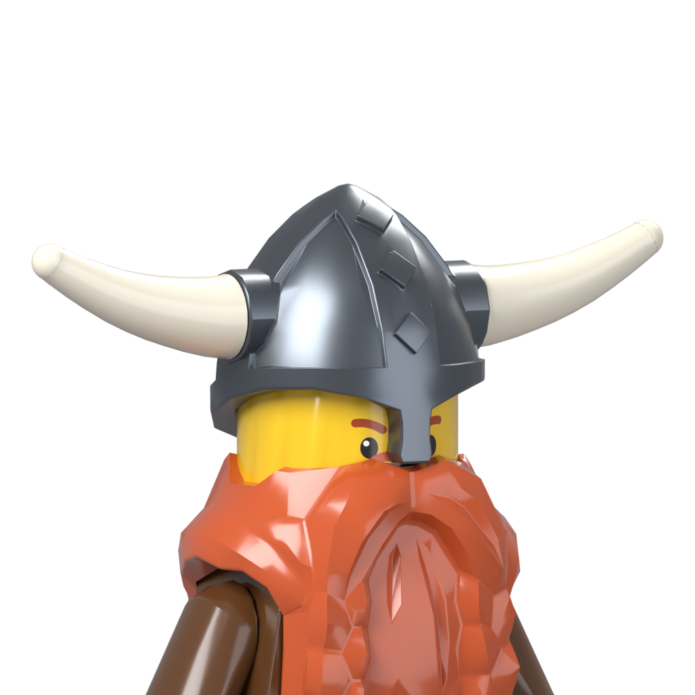
192

192
192 px is the desktop and Chrome app icon (shown at 96 css px, sharp on a 2x screen); 48 px is the favicon at its true size.
05Glim the Ghost
A friendly glow-in-the-dark ghost under a sheet hood
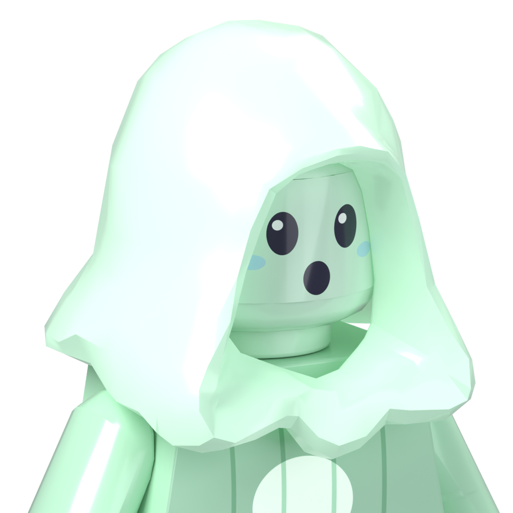

192 px is the desktop and Chrome app icon (shown at 96 css px, sharp on a 2x screen); 48 px is the favicon at its true size.
New: Dex the Raver, four variants
Same bust framing and face style as the others. Acid: brown hair, big black DJ cans, the yellow acid smiley on black. Checker: bleached blond, a slim silver band, a smiley on a checkerboard band. Tie-dye: hot pink hair, neon lime cans, a neon smiley on a tie-dye spiral. Glow: cyan hair, slim white cans with LED rings, glow sticks on a dark tee.
06Dex: Acid new
Dex the Raver: spiky messy hair, headphones over his ears, big black DJ cans and the yellow acid smiley on a black tee
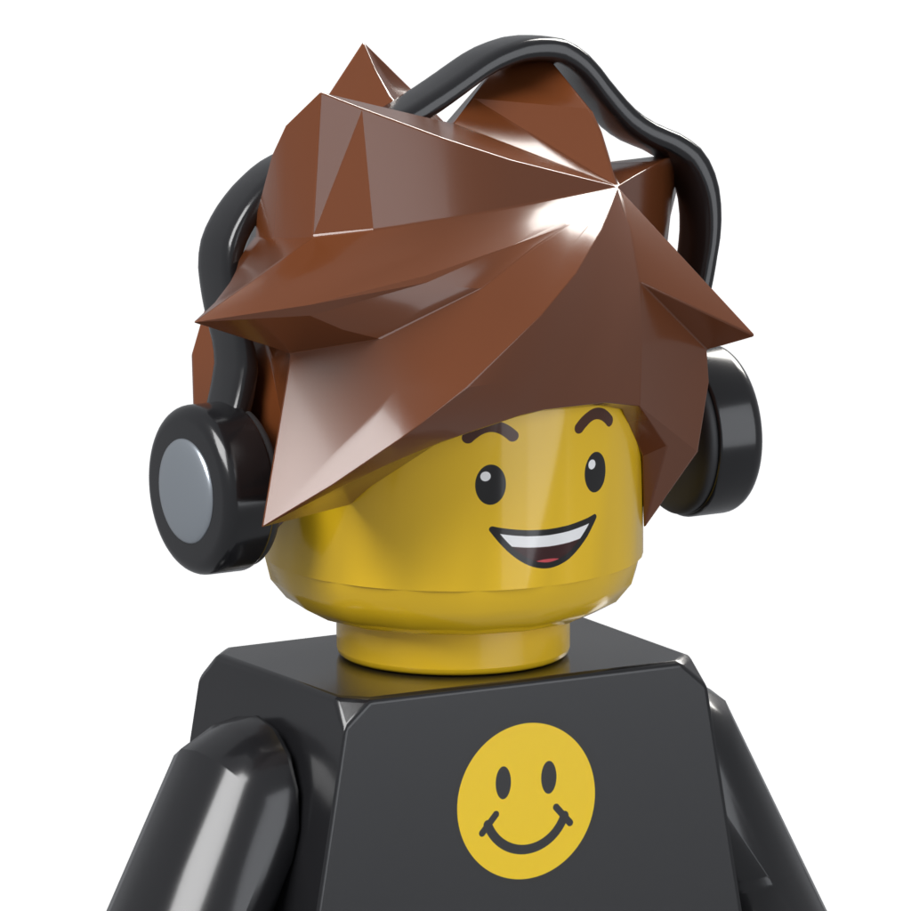
192
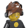
192
48
192 px is the desktop and Chrome app icon (shown at 96 css px, sharp on a 2x screen); 48 px is the favicon at its true size.
07Dex: Checker new
Dex the Raver: spiky messy hair, headphones over his ears, a slim silver band and a smiley on a checkerboard band
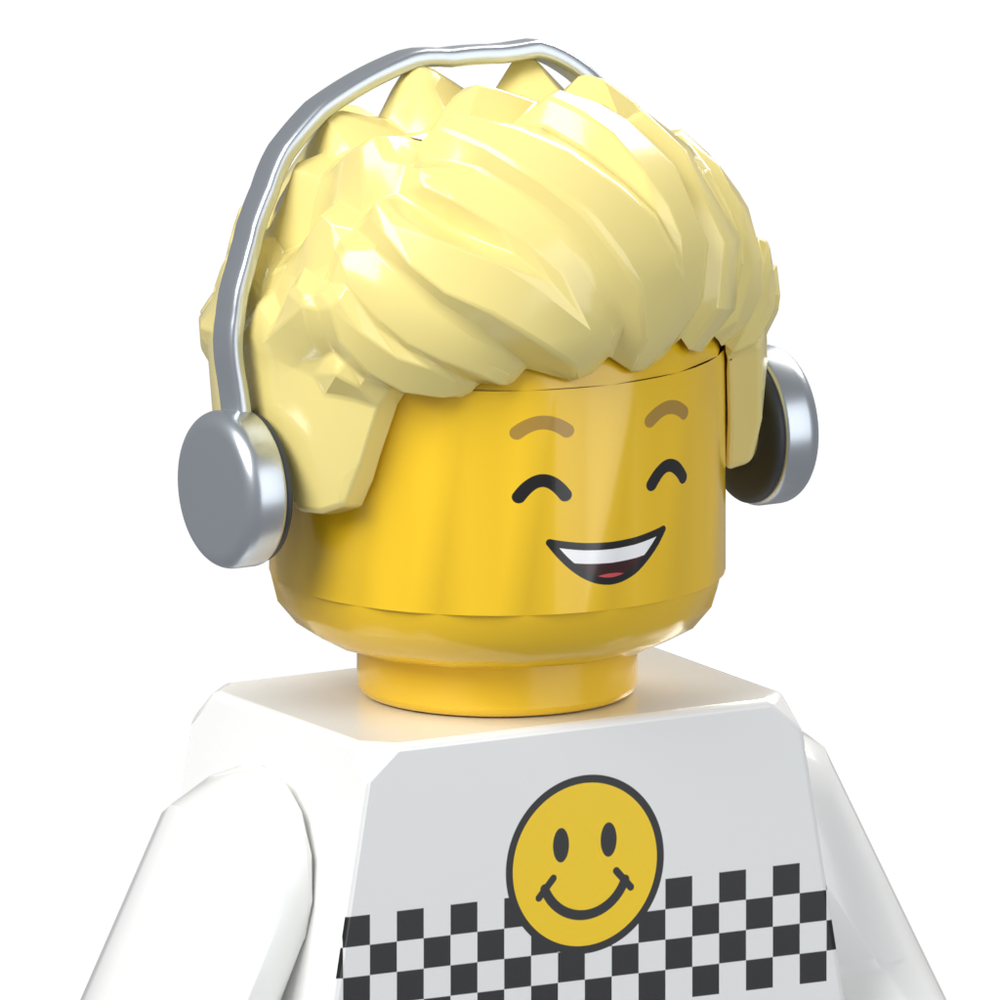
192
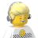
192
48
192 px is the desktop and Chrome app icon (shown at 96 css px, sharp on a 2x screen); 48 px is the favicon at its true size.
08Dex: Tie-dye new
Dex the Raver: spiky messy hair, headphones over his ears, neon-lime cans and a neon smiley on a tie-dye spiral
192
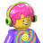
192
48
192 px is the desktop and Chrome app icon (shown at 96 css px, sharp on a 2x screen); 48 px is the favicon at its true size.
09Dex: Glow new
Dex the Raver: spiky messy hair, headphones over his ears, slim white cans with LED rings and glow sticks on a dark tee
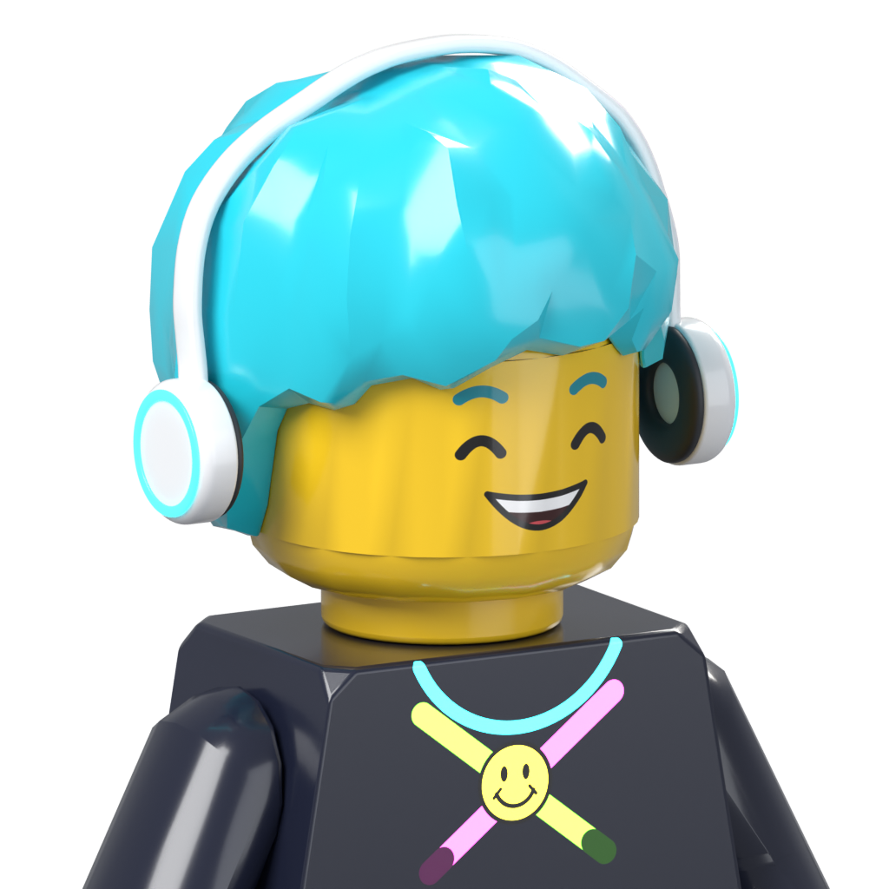
192
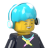
192
48
192 px is the desktop and Chrome app icon (shown at 96 css px, sharp on a 2x screen); 48 px is the favicon at its true size.
1. Which one is the app logo?
Choose "This is the app logo" on one figure.
2. Anything to change on it?
For example the tile colour, the hair colour, the headphones, the print or the framing.